(日記とか言うモノ)
もう6月も終わりか・・・ばたばたしてばかりだったので、過ぎてゆくのがさびしい。
夏来スペシャルの月だったよなあ。しみじみ。
だからでしょうか、今年の梅雨はちっとも雨降らないのは。ガールズが吹き飛ばしちゃったんだね！
にしても、ガールズの新作日本上陸したのが、自分の誕生月だったなんて、ちょっと運命を感じたよ。うへへ。
ここんとこ、ゆっくりwebをうろつく時間が無いのががつらいなあ。
で、massangeanaさんのPpGサイト。
SGC2Cでパワパフ登場の回が紹介されとりました。ふふふ、この回はパワパフが優勝なのですよ。
それにつけても・・・
“Space Ghost Coast To Coast」は, Cartoon Network の中で日本で放送される可能性がもっとも低い番組だろう。”
うわーーん、そりゃないよー。（まあ、もっともだが）
お口直しに、bleedmanさんのPpGファンコミックを見にゆく。
もうじきチャプター2も完結ですね。いつのまにかマンディも出ていて興奮。隣のメガネはTime Squadのガキだろうか？ジャックかっこよすぎ。
あー、ゆっくりしてえええ。でも、ゆっくりできる時間がとれたら、一日中寝てそうだけど。
ま、なにはともあれ、目標もって努力してる人にはいつか道が開けてくるもの。漠然と、だったらいいなあ～と思ってるだけじゃダメなんだよ。待ってたって「何」も来ないんだよ。そしてがんばってる人には、必ず応援してくれる人がつくものだ。
だから、○○さん、がんばって！！ずっと、ずっと応援してるよ！そして、楽しみにしてます。
「忙しい」話ばかり書いてるものだから、メールもらったり、オフで会ったりすると、「お忙しそうですね」とかが枕詞になっちゃってるのが、なんとも情けないです。だから、もうそういうことを書くのやめようと何度も思ってるんですが、気が付くと書いてる。
まあ、実際ここんところくにTVもみてなきゃ、ネットだってろくに回ってない状態なんで、それしか書くこと無いといえばそうなんですが・・・
まあ、このページは誰かに見せよう読ませようという邪念を極力考えずに、とことん自分のためだけに存在してる場所なんでよろしくおねがいいたします。と、いう風に「自分ではない誰か」に対して喋ってるような口調になっちゃうのはすでに矛盾なんですが、これもまたWeb日記の特性ってことで。
だから、いっときここをblog化しようと考えたこともあったんですが、「情報を扱う」といったblogの（自分なりの）概念とはうまく合わなかったのでやめました。また、「雑記」ともちょっと違う気ももして、いまだに「日記」のカテゴリーでやってます。「雑記」より「日記」のほうが、なんかより私的な感じがしてしっくりくるんですよ。
言葉のもつ概念やイメージにけっこうとらわれるタイプなのかなあ。
そういえば、TeenTitansが早くもDVD化するみたいですね。でも、多分自分は買わない。
いやね、絶対今年の12月には日本上陸するとふんでるから。
根拠はCNの今年のカレンダー。年末に初めて見せてもらった時に、ムチャルーチャやスパイダーマンがなぜか載ってて、「なんだこれ？海外のそのまま流用か？よくわからんチョイスだなあ」とか思ってたんですが、次々と実現。で、おどろいたことにTeenTitansも載ってたんですよ、12月に。
ふふふ、これは間違いなくくるね。
JLのかねあいもあってか、第二シーズンの残りエピソードは米国では放送延期されたみたいだけど、バッチリ作品はあるので、日本でも一気に2シーズン分やってくれることでしょう。うんうん。
そんなわけで、私はむしろこっちを注文です。
Batman
Beyond ガイド！
なぜ、いまさら？って気もするけど、今さらだからこそJLのロイヤルフラッシュ団との関係とかもわかるかなあと、チョット期待。
またもご無沙汰。このところベットで寝た記憶がない。椅子とか床とか電車とか・・・
辛いとき、逆境のとき、どうすればいいのか？
もちろん、不敵に笑うのさ。
とかいいながら、シャレにならない時も。
なんか血糖値が下がったのか、みるみる血の気が引いてきて「やばい、このままだと気絶する」ということが自分でもわかった時がありました。思うように動かない体を動かし・・・
あわててコーラを一気飲み。
すると、みるみる回復していくのウソのようにわかる。まるでRPGのヒーリングポーションを飲んだようだ。なんか不思議な気分。さすがコーラ、糖分の塊。
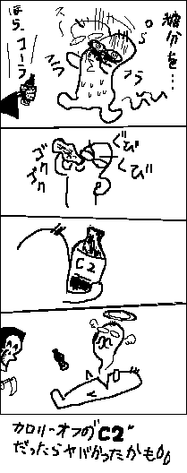
チョークゾーン見忘れたり、パワパフ#51買えなかったりとかありましたが、通販していた「三色だんご」さんとこのパワパフ同人誌が届きました。
バブ×バタ ブロ×博士 な感じの本。なんかバブルスが腐ってたのがよかったー。つーかバブルス一人がエロ暴走してる漫画・・・・（誉めてます一応）ブロッサムかわいかったし。
そーいや、パワパフのショーって特に表には出てこないけど、あちこちでいまだにちょくちょくやってるっぽいですな。公演スケジュールとかだけでいいからwebにアップしてくんないかなあ。
いやあ、最近モテモテです。モテモテすぎて、家にも帰れません。いやーもう解放してー、寝かせてー。
睡眠時間削ってでも、ここでたあいもないこと書いてると、ストレス発散できていいですなあ。いろいろあっても、心の余裕だけはキープしていきたいものです。
またもや、占いサイト。URL占い。
どれどれって・・・さっそくウチのサイトを試してみると
------------------------------------------------------------
スカポン太さんのサイトは マニアック サイトです！
あなたのサイトのURLは、マニア受けがすこぶるよい、マニアックサイトの可能性が高いです。
逆に言うと、一般受けはすこぶる悪いです。
正直、マニアではない人から見ると、「キモい」という感想を抱かれるかもしれません。＞続き
------------------------------------------------------------
ヽ(`Д´)ﾉ キモくて悪かったなーーー！！
やっぱりウチはマニアックサイトだったのですな（笑）
夏来のあとのレギュラー放送のパワパフ、あれから毎日見てます。（真夜中のやつですが）
なにげに新エピ用のCMが追加されてるんでよね。と、いうより新エピ用予告編ていうのでしょうか。PpGの前のカーレッジくんと見てるとよく遭遇できます。
「次はパワーパフガールズ」とか言って新エピの予告みたいなものが。だから、これって多分8本あるんでしょうね。テレ東版は見てこなかったので、次回予告っていうのがちょっとあこがれ。
そもそもちゃんと順番通りに流すとはかぎらないカートゥーン式では、次回予告はむしろ余計な存在なのかもしれないけど、そのおまけゆえの楽しみってのがあって、あると嬉しいものなんだよね。（特にそこで声優のアドリブとか入ってたりすると、また最高）
あと、一回見た後に、録画で見返す話の回数で、なんとなく自分の嗜好がわかる気がします。
とりあえず、自分の場合、「ついてない日」と「代わりの先生」のリピート率が異様に高いです。
特に「ついてない日」、この回は原語を超えたノリの良さで、もう何度聞いても笑っちゃうんだよなあ。
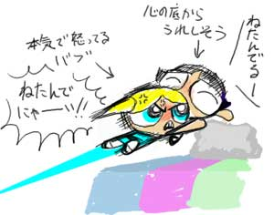
特に、このあたりスッゴク好きなんですよ。これ、原語で聞くと、バブルスがえらくドスが効いてて怖いんですが、日本語版だとバターカップがすっごくいいの。
で、実はこのシーンよかこの直後の姿を消して声だけになったとこが、もうタマラン。何度もここで笑う。
「うーーー、ねたんでにゃーーい！」
「ねたんでるーーーーーーーう！！」
「ねたんでなぁあああいいい！」
「にゃにゃにゃ、にゃんだよ、なーんにもわかってないバブルス！」
（よく聞き取れないがこう言ってると思う）
とか言うとこ最高。
あ、この後のブロッサムもお茶いれシーンも最高です。
ニックのチョークゾーン見た～！
なんか、オーイェイカートゥーンでやってたときより、面白くなってるんですけど。しかもテンポも3倍くらい早くなってる？？
とりあえず、完全レギュラー化したペニーが、より個性の立ったキャラになってて大満足。かわええし。さすが新世代ニックトゥーンだ。「慣れればむしろカワイク見えてくる」従来のニックトゥーンキャラ（例：ヘルガやジューン）と違って、そのまんま分かりやすいかわいらしさだ。
よし、ペニー目当てで毎週見ることに決定。週1ペースみたいだから、ちょうどMLaaTRが来るまで楽しめそうだ。
あと、CNではスパイダーマンのメイキング特番。
CNのサイトの番組質問箱並のゆるいテイストだろうと思っていたら大間違い。なんか濃い。
バットマンやタイニーなどワーナーとの合作を手がけてきたテレコムアニメーションのスタッフのインタビューが収録されてるなんて、聞いてないよ～。嬉しい誤算だ。
今頃見て見りゃ、ちゃんとテレコムのスタッフ日記みたいなとこで、CNの取材の記事が。
制作指示の流れや、口パクのパターンシート、そしてその進行表とか、なんかめちゃめちゃ貴重なものを見れた気が・・・
やっぱりスタッフにもヴェノムは人気高かったみたいですね～。
あと、映像みて思ったのはCG入ってる？十数年前の作品だから、バリバリアナログな印象だったんですが、意欲的にデジタル制作に力注いでいたんですなあ。絵柄の感じはやっぱりX-MENぽかったけど。まあ、当時のX-MENも日本アニメに比べると古くさかったけど、面白かったので、慣れれば「古くささ」は気にならなくなるんでしょうねえ。
CNも特番といわず、こーいう番組をもっと作って欲しいですよ！
これのJL版やバットマン版なんかもみたーい。
いや、つーか、なぜ「パワパフ新作メイキング」を作らなかった！ゴルァ！
日本のガールズの中の人インタビューはもちろん、翻訳家の苦労話や、日本語版の演出家のこだわりとか、さらには、本場カートゥーンネットワークスタジオへの潜入レポートとか織り交ぜて、１時間番組で！
さらに夜中に「どーする、どーなるPpG朝まで生テレビ」ですよ！
でもって、パワパフグッズコレクターとか集めて「PpGしゃべり場！」とか、パロディ解説とかガールズ宅完全解説とか濃い内容の「PpG夜話」とか、PpGグッズの売れ行きとか並べて「PpGカウントダウンTV」とか！
もう、なにがなにやら。
ぐわ！小町屋さんとこの掲示板にピンキーのパワパフ魔改造が！（いや別に魔じゃなく、ノーマル改造）
やべえ、ピンキーちょっと欲しくなってきた。これはすごくやべえ。 かなりやべえ。
やっぱ欲しいグッズは自作だよな～。ワシもなんかやりたいな～。
あっというまに今週も終わってしまいましたな。
ふと、振り返ると・・・・
16日には携帯サイトで当選した人は「アフレコ見学ツアー」か ・・・
いいなあ、どんな感じだったんだろ、すげえ気になるなあ。なんの話の収録だったんだろ。もしネット環境がある人だったら、ぜひどっかでレポートして欲しいものだ。（それとも、案外、ここで見たことは口外禁止とか言われていたりして・・・ハッピーなペーパー・・・）
でもって、今日はアメリカではビリマンに続きイビル コンカルネの放送が開始されたみたいですね。扱い小さそう・・・ガストリー少佐～！
そして明日はニコロデオンでチョーク・ゾーン開始ですね。ニックのカートゥーンカートゥーンともいうべき、新世代ニックトゥーンの第1弾がいよいよ始まるです。で、この後はティーンエイジロボットが控えてますねー。楽しみですねー。でも、いつになったらティーンエイジロボットの第二シーズンは始まるのですか？
これで、インベーダージムまで始まったら、ニックのイメージがガラリと変わるのになあ。
さらに週明けの23日といえば、バターカップ役の池田有希子さんの誕生日だったりします。
池田有希子さんの最近の公演はこちら＞■
池田さんは 歌も上手いらしいので（なんか去年ミュージカルの賞をとったみたい）PpG新作のロックオペラはぜひとも見たいなあ。
眠い・・・。
やりたいこと、やんなきゃいけないことの案件がいっぱいあって、少しずつこなしている気ではいたのですが、ちっとも減っていっていない気がするのはなぜなんでしょ。
6月にはパワパフサイトもいろいろと動きがあったので、リンクのメンテナンスもそろそろやんなきゃなー。
そーいえば、最近東芝から発表されたHD・DVDレコーダーRD-XS53
待望のスカパー連動機能付きです！やっぱり東芝様ですよ、SONYなんか信用できんですよ。
録画しても見てる時間ないですが、買うとしたらこれに決めた。
買う買う言っていつまでたっても買ってないですが、ようやっと買ってもイイ機種登場でちょっと安心。
あとはPCの動画ファイルにも対応したマルチプレイヤーになってくれれば言うことないですな。
昨日の日記削除しました。
いやー、よく考えたらさ、あれが検索にヒットして知人が発見したら、ワシがこんなサイトやってるのバレちゃうじゃないですか。それは絶対ダメなのです。
ようやっとPpGコミック#50も更新。もうじき次の号がでちゃうものな。
ついでだからBBSにパワーパンクのアイコンも追加したけど、これ今だからいいけど、そのうち「なに？このオリパフ？」とかなっちゃうんでしょーか。ぜひアニメの方でもパワーパンク登場してもらいたいものです。
CNの7月の番組表、スパイダーマンとXエボの参戦で、やっぱり消えましたね。
サムライジャックとビヨンド。
この2つはぜひとも次の復活の際には未公開分ひっさげて復活してほしいものです。いや、マジで。
カーレッジくんとトレードでカウチキが復活と・・・デクスターしぶといね。
でもって、ひっそりと「エド エッド エディ」も復活ですか。
あれ？ビリマンは？
まだ復活しないとですか～～～～！！！えーん。
ハンナバーベラ枠は土日に移動しただけで、内容はいっしょか・・・ちぇ。
この記事は削除されました（とか書いてみる）
パワパフ新作効果ってのはあるもので、土日のアクセス数が凄かったです。いつもの3倍ちかい・・あわわわわわ。ユニークアクセスでこれだから、単純なページビューだと、うーーん、ブクブク。
やはり突然増えるとビビリます。
特に日曜の夏来終了後の5時台。そこだけ異様に突出してます。その時間帯だけで、いつものアクセス分くらいあるよ～～。
さすがに、週明けると平常にもどったかな。・・・まだ1.5割増。
仕事の方も、平常の・・・大忙しに戻った・・・うわーん、こっちも割り増しなんてひどいや。
で、そのちょうど先週の大忙しと夏来の間に、長らく待たされていたものがどっさり届いていました。忙しいのも重なるけど、こういうのも重なるものなんですなあ。世の中不均衡だ。
インベーダージムのDVDきたー。うわ、やっぱDVDだと映像キレイ。もともと色彩が素晴らしく美しいものだから、よりびゅーてぃほーに。スタッフの連中なんか色々言ってるんだけど、全然聞き取れん。
「今死んだ～」とか「エヴァがどうたら」とか言ってるらしいんだけど、そのカケラもわからん。
ま、これはゆっくり堪能しよう。それにしてもやっぱ、海外DVD安いよな～。これなんか2枚組なのに20$！！。一枚10$かよ、信じられん。日本人やめたくなった。
あと、アマゾンに頼んでいた本がどっちゃりと届きました。
兎用心棒（USAGI YOJIMBO）のせいで遅れまくっていたようですな。でも、今回のウサギもおもろかったからいいよ。男装の麗人剣士登場！
あと、待ちに待ってたのが「Nightmares & Fairy Tales」。
いやー、TPB化を待ってアメコミ屋では立ち読みでちらほら見てただけなんだけど・・ちゃんと読むと、すげえおもしれえ！
正直FScの絵だけに惹かれてたんだけど、話も面白いや。さすがゴスコミック界の女王セリーナ・ヴァレンチーノだけはあるね。
タイトルみて分かるように連作短編もの。
狂った陰惨な闇の物語。でもFScのキュートな絵柄で独特の世界を醸し出してる。
FScはけっこう日本ぽい絵柄で、ぶっちゃけ日本の漫画雑誌に連載してても違和感ない。でも、いかにも日本の漫画に影響されてますよ～、な感じの絵ではなく、ちゃんと独自のタッチを持っているのがいいのです。妙に長い首とかのアンバランスさがステキーー。
物語は、毎回違った話なんだけど、毎回アナベル人形が登場。そこが連作。でも、物語には直接関わることはないのです。だた、いるだけ。語らない語り部みたいなものでしょうか。
アナベル人形いいよーーーー。そーいや、アメコミ屋にアナベル人形のぬいぐるみはいってたっけ。ほしくなっちゃったい。
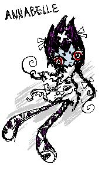
でね、それだけではないんですよ。さすがSLG作家さんだけあって、巻末には
Jhonen VasquezとRoman Dirgeのイラストピンナップも！！！！
うわーい大収穫。やっぱええよなあ。Roman Dirgeなんかちゃっかり隅にレノーア描いてるし。
スペシャル終了～～。わー寂しい。
まあ、しばらくは通常放送で新作リピートされるから、それで反芻しながら楽しもう。
作品に波があるのはシリーズものにはつきものなので、それはそれでOKですだ。なにより「見れた」んだから贅沢いってられんですね。見れずに悶え苦しんでる他のトゥーンファンもいることだし。
って、バットマン・ザ・フューチャーの未公開分みてえよー。（ファンとはどん欲なものです）
初日はストレートにおもろい話が多かったけど、今日の分はヒネったものが多かったかな？
お勉強中のガールズはけっこう好きでした。バブルスのてきとーな歌とか。ああいう風に即興でてきとーな歌作っちゃう人いるよね。あと数字の8でバブたんメガネ・・・
翻訳のニュアンスまではわからないけど、前よりより雰囲気をだそうと工夫しているような気もします。アメーバーボーイズがガールズのことを「パワーパフギャールズ」と言っていたり、モジョもより原語のモジョ喋りに近い感じがした。（前より早口になったかも）
それにつけても、個人的には今回のバタカの吹き替えはええなあ。元気よさでは原語を超えたかもしれないと、思ったよ。自分の中ではバタカ株が急上昇中。
今回はなんといっても、グリーン先生でしょ。うん、うん。掘り出し物やぁ。
グリーン先生漫画
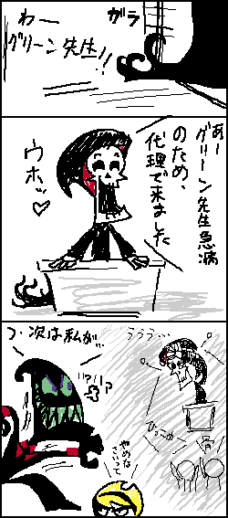
グリーン先生出てないや(笑)
あの足下のゆらゆらで、グリムを思い出してしましましたのよ。
初登場の時、一瞬グリムかアクゥか！なんて思ってドキドキしてました。
ちゃんと録画できてるかどうかのチェックといいながら、またイチから全部みてしまったー。
けっこうどれもこれも、意味のないバカバカしい話ばかりで満足～。
やっぱこうでなくては。
「特別な一日」はもうストーリーもなにもない徹底したバカ話だったし。
しかし、ガールズってこんなにいろんなパワーもってたの？？？
ちいさくなれるし・・・・（じゃ、あのちっちゃくなあれの話はなんだったんだ？）
超振動のやつはなんだったんだ？やっぱ瞬間移動？なんだかわからんがスゲー。
バタのベロよか、必死でブーブーやってるブロ子さんに萌(笑)
日本語の声優様たち、久々なのでどうかな～と思ってたけど、想像以上にノリノリでいいかんじ。
やっぱり麻生ブロはええなあ。
パニクリやブチキレもいいけど、「モンスターでいっぱい」のときの演説なんか最高。
原語以上にえらそうぶりを発揮してて、いーかんじ。「はい、だっこ」（萌！
でも、池田バタコさんが今回かなり良かった！全編通してすげーイキイキとしてたものなー。
とりあえず、トーキングドックにむかつきー。でも、話はおもろかった。（小堺吹き替えあんがい悪くなかった）
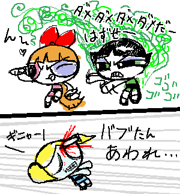
明日も楽しみ。
そーいや、「ついてない日」はなんか色々妄想かきたてられる話だったなー。
バイトのアレもそうだけど、モジョがブロに言う台詞なんて、まるでプロポーズ(笑)（ななめに見過ぎ）
さあ、いよいよですよ！新作ですよ！
我らは己らに問う 汝ら何ぞや
我は
てな感じですよ。もうなにがなにやら。
でも一度にみちゃうのはもったいないな～。録画して、一日一本ペースで見ようカシラ。カシラかしらご存じカシラ。絶対無理そーーーーー。もうわけわかんねぇ。
ところで、6/11いえば、海外ではビリマンの新作も始まった様子。うおー、みてえ。
あと、新作アフレコ見学ツアーの当選通知が来る日でもあったな・・・
って、メールこねーよ。はずれた～～～！！
もの凄く残念ではあるが、素直に明日のパワパフをピュアな心で見るとしよう。
あー、もう今日はこの話しか出てこねーよ。どーにでもしてくれー。
いやーまいったまいった。ここ数日間、誇張なしで24時間戦ってました。
ううう・・やっと、布団で寝れる。フロにも入れるよう。
最初はここ数日間のグチでもたれようかと思ってたけど、しばらくぶりのネット放浪でスッキリ。もうどうでもよくなっちゃった。まだ一月はこんな感じが続くけど、とりあえずの山は越えたので一安心。
そんな自分にご褒美。
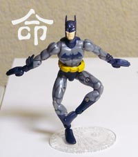
ミクロマンシリーズのバットマンモデル買ってしまいましたっ！
うおー、これすんごくよく動くー。値段もサイズもミクロマン。お買い得だよー。
バンダイははやく権利手放して、タカラがこのシリーズでTeenTitans出してくんないかなぁ。これのスターファイヤーとか欲しい。あまりにいい感じなんでこんな遊びも。
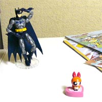
「やや、あれに見えるはブロッサム」
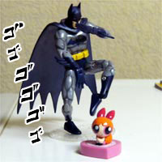
「そろ～り、そろ～り。うぷぷぷぷ」
ブロッサムうしろうしろ！
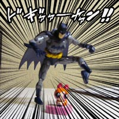
「もう辛抱たまらーん！！」
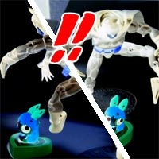
！！！！
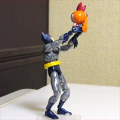
「高いたかーーーい」・
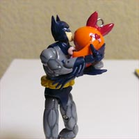
「うーん、ブロッサムはかわいーねぇ。むちゅ」
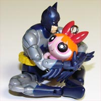
「ぼくたん寂しいのよ・・・ばくの周りの連中ときたら金めあての野郎かキチ○イばっかり」
「そうだ、ブロッサムには今度宇宙ステーションをプレゼントしようね」
「大丈夫大丈夫、会社の金ちょろまかして作ったやつだから」
「その代わり、ぼくの新しいロビンにならない？ふふふふ」
あー楽しい。
って、ねこみそ さんの過去ログ6/6見たら「BATMAN & BATGIRL」あんど「CATWOMAN」が出るってかーーー。（ちょうどこの日の夜に忙殺が始まった・・紙一重で情報のがしたー）つーか、バットガールはバットマンとセット販売かよ！早まったかー。ダブリ上等で買っちゃうかも。
ついでにその日の日記の感想。ジンクスはアニメ版しか存在しないことに決めた。
新作タートルズはどうやら宇宙にまで進出したようで、ちょっと気になってFOXBOXを覗いていたら目に入ってきたWINX。
なんかどっかのファイル共有ソフトみたいな名前ですが、5人組の魔女っ娘もの！！
あれ？なんか似たようなことが最近でもあったような・・・
W.I.T.C.H. これかーーーー！！
妖精風コスチュームに変身して戦うティーンエイジャーの女の子5人組。ってなんかキャラとかまでカブリすぎてませんかー。変身後も妖精風で日本のと比べると比較的あっさりとしたデザインだったり、人種をいろいろ配置したりと、アレンジの風味までいっしょ。
WINXのほうが、よりセーラームーンっぽい感じですが、やっぱりヘソだしかあ。
（もう米国にいったら女の子のヘソだらけとスカポン太の中では決定した）
なんかイケメンの助っ人っぽい男ヒーローもいるみたいだし。しかし、トータリースパイズでもそうだったけど、どうして男キャラはぱっとしないんだろ。
W.I.T.C.Hはディズニーでしたっけ。
ディズニー VS FOXですか？
どっかにファンサイトとかあって論争してるんじゃないかと気になったけど、ちょっと時間切れ。機会があったら探してみようかな。あちらの人もセーラームーンはよくご存じだから、「どっちもセラムンのパクリ！」とか言う剛のものとかいそうで楽しそうなんだが。
ふーむ、W.I.T.C.Hはメガネ娘さんで、WINXはより日本風に「ありえない紫の髪」の娘さんあたりが勝負どころでしょうか(笑) でもさすがにまだ「緑の髪」はいませんね。
最近の海外アニメの流れって・・・なんかスゲエなあ。
夏来まであと少し。
月日のたつのは早すぎて、嬉しいやらイヤになるやら。
過ぎていく時間は怖くない 輝きを失うことが嫌なのです。
ネットがらみといえば、著作権。
Ｗinnyの衝撃(5)
匿名ネットと著作権
京都の文化財、デジタル化で標的に
京都新聞での記事。全体としてはわりかしまともなことを言っているような気もしないでもないですが、気になるのは
「風神雷神図など著名な絵画は、陶器の図柄などに無断転用される例が後を絶たない。」
のあたり。
なぜに困惑するのかがよくわからない。そんな昔のもの（正確にはミッキーマウス以前）のものは著作権はとっくに消滅してるはずなんですが。実際「青空文庫」などは古い著作権が切れたものをデジタル化して公開しているわけで、「無断転用」もくそもないと思うのですが。
著作権というのは著作者が有するものではなく、所有者がもつものなんですか？しかも、期限とか関係なく？
確かに著作権が切れた絵画などを写真に写すと、その「絵」そのものには著作権は切れていても、その「写真」に写真家の著作権が発生します。古い音楽も、「曲」そのものの使用は自由だけど、それを演奏した「音楽」には演奏者の著作権が。それならまだわかる。でも図案の転用は・・関係ないのでは。
著作権関係を調べて、なんとなくわかったつもりになっていても、こういうのを読むと、またわけがわからなくなったりするわけです。難しいねえ。そして今日もファンサイトはグレーゾーンを突き進んでゆくのです。
で、話は変わって。
おしゃれガールズのコレって、この雰囲気はどっかで見た感じだなあと思ってたんですが、French
Kitty近くない？おフランスっぽいポップキュートにすると似ちゃうだけかもしれませんが。
最近ネットがらみでいろいろありますね。
そんなご時世に総務省がこんなページをつくったよ。
これはっ！やはり官公庁の「萌え化」は進んでいるっ！
これぞまさに、総務省のパワーパフガールズですな！！！環境省のパワパフに対抗ですか。
_, ._
（ ﾟ Дﾟ）え、マシュマロ通信？
おじゃ魔女？
違いますとも！
＼（´Д｀）／ 三人娘だったらみんなパワーパフガールズなの！
そうか、この娘さんたちは「E-NAVIフレンズ」と言うのか。
ところで、関係ないけど、パワパフの新作CMって一種類しかないんでしょーか？
ムチャルチャはあんなにバリエーションあったのに・・・・ちきしょう。
新作といえば・・
今回8本しかやらんのですが、声優さんのスケジュールの関係なのかなぁとか思ったりもしました。だって麻生かほ里（ブロ）さん、今まで九州にいってたぽいですしね。で、ようやく東京に戻ってきたので「秋来スペシャル（仮称）」の収録が6月中旬から始まると・・・
ブロッサム待ちでしたか！てことは、やっぱりアフレコツアーに当たったら、麻生さんに会えるにょ！
もうだめー。6月中はなんにも手つけられないよー。
とか言いながら、JLの「ワイルドカード」は見ましたよ。
その前のは録画放置でみてないってのに。だって、今回はハーレィが出るんだもの！！
やっぱラブリー。でも、出番少ないー。
にしても、やっぱりジョーカーに対抗できるのはバットマンしかいませんな。まるで悪役のような話術。
今回スーパーマンは影薄かったなあ。
ランタンが倒れた時、ホークガール姉さんが棍棒なんて持ち出すから、てっきりぶったたいて起こすのかとおっもってしまいました。
ところで、ジョーカーのデザイン、古いやつに戻ってるね？なんでかな。（ハーレィは新旧でデザイン変わってないからアレはアレでOK）
それにしても、ロイヤルフラッシュ。
目をつぶればそのまんまTeenTitans。キングなんて本当にそのまんまロビンだから、日本語版と切り替えて聞くとすっげーーーー違和感。すっかり原語のTTに慣れちゃったものだから、日本語版が放映されたとき、イロイロと不安です。
全然関係ないけど、昔やってたサイト、今はもうないんですが・・・
なんか検索かけるとリンクのカケラが、まだいっぱいちらばってます。はずかちい。
いっぱいいっぱいのところにさらに仕事をねじ込まれ、マジ泣きそう。
絶対無理っていったじゃないのさ。いや、ホントに無理だって。今週は果たして眠れる日がくるのでしょうか。こんなの書いてるヒマなんかないけど、このくらい書かないとやってられんですよ。
CopaToonを覗くついでに、ビリマンエキスの補充。
マンディはかわいかったり、渋かったりしてるんですが、ビリーはどの国でも印象かわんないなー。